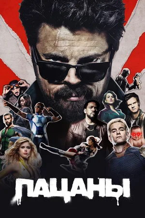

Лучшие фильмы и сериалы
Сверхъестественное
Десятидюймовый герой
Мой кровавый Валентин
Тайны Смолвиля
Тёмный ангел
Спокойная жизнь

Пацаны

Дата рождения: 1 марта 1978 года
Возраст: 46 года
Всего фильмов и сериалов: 38
Жанры: приключения, детектив, ужасы, драма, фэнтези, драма
| Год | Русское название | Оригинальное название | Роль |
|---|---|---|---|
| 2001 | Тёмный ангел | Dark Angel | Бен |
| 2004 | Тайны Смолвиля | Smallville | Джейсон Тиг |
| 2005 | Сверхъестественное | Supernatural | Дин Винчестер |